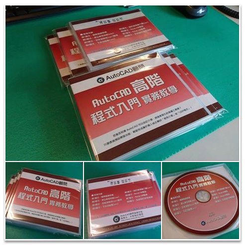

▼函授教學主題：AutoCAD 高階程式入門-函授教學光碟
介紹：光碟內容教授如何有效的運用預設內建指令功能，以及搭配「巨集指令」、「腳本檔」、「功能表」、「cui自訂操作」及「lsp程式自動掛入」，讓個人或是企業的AutoCAD功力更上一層樓，進而提升職場競爭力。
作者：Tiger&蘋果爸
版本：AutoCAD 2016
光碟：中文影音教學
規格：1 套（一片DVD光碟），光碟共計有8個單元(共627分鐘)，附有DWG範例供操作練習，還有相關教學文件筆記。
影片：光碟內附CadPlayer播放程式（僅適用微軟作業系統）
售價：NT10000元
出版日期： 2017年3月中旬
🎀 蘋果爸教學課程訂購中 🎀
👉 (點我選購光碟課程) 👈 👉 (點我選購線上課程) 👈
👉 (點我下載高階程式目錄) 👈
大家好：
各位是否知道 AutoCAD 可以自訂介面，創造客製化的專屬工具嗎？
只要透過預設開發功能，輕鬆完成屬於個人或企業的「使用介面」或「LISP程式」！
快來投資自己提昇個人職場競爭力吧～
※例如：
1.設置「一鍵清除」巨集工具，快速PURGE清除圖檔中的所有不用的資訊(圖塊、圖層等等)。
2.編寫「腳本檔」完成批次繪圖作業(PUBLISH大量出圖、自動開圖設置作業)。
3.建立「圖塊資源庫」將搜集或新建的圖塊分類，日後透過「影像框幻燈片」呼叫插入圖塊。
4.開發「LISP程式」規劃自己的「專屬外掛程式」，也可用在企業用戶端自訂安裝。
教授軟體為AutoCAD 2016版本，使用 AutoCAD 2006 至 AutoCAD 2025 版本均可。未來 AutoCAD 2026 也可以適用。
因為教授的程式基礎架構都是通用的，這一點請大家放心。
光碟內含、「DWG範例」及「筆記重點整理」，另外提供「教學講義」一本。
第1單元：檔案組織架構
1-1.系統資料夾及檔案
1-2.檔案組織
1-3.系統檔案類型
1-4.自訂組織檔案
1-5.可信任檔案設置
1-6.指令與系統變數
第2單元：建立指令別名(pgp)
2-1.指令別名
2-2.自動修正和同義字指令
2-3.自訂指令別名
2-4.自訂外部指令
2-5.特殊程式用指令
2-6.建立工具選項指令
第3單元：巨集及腳本(scr)應用
3-1.巨集指令
3-2.使用者輸入
3-3.巨集工具指令範例
3-4.腳本指令
3-5.批次腳本檔
3-6.幻燈片製作
第4單元：下拉功能表(mns)
4-1.企業自訂功能表
4-2.下拉功能表-輔助繪圖
4-3.下拉功能表-快速設定
4-4.下拉功能表-物件性質
4-5.次功能表及工具列
4-6.影像框及說明功能表
第5單元：自訂使用者介面(cui)
5-1.自訂工具
5-2.按兩下動作
5-3.加入快速鍵
5-4.自訂快顯功能表
5-5.滑鼠按鈕
5-6.轉移自訂
第6單元：AutoLISP概論
6-1.三種應用程式
6-2.AutoLISP載入方式
6-3.自動載入LISP檔
6-4.LISP語法結構
6-5.程式設計構想
6-6.Visual LISP入門
第7單元：AutoLISP應用
7-1.GET系列函數
7-2.LISP副程式
7-3.POLAR函數運用
7-4.串列座標運用
7-5.選擇集運用
7-6.IF函數運用
第8單元：系統自訂架設規劃
8-1.自訂Lisp程式備份
8-2.自訂Lisp程式移除
8-3.Lisp程式架設安裝
8-4.用戶端Lisp程式規劃安裝
8-5.Lisp程式維護更新
8-6.自訂外掛捷徑
以下提供AutoCAD函授教學範例影片展示，給會員朋友參考依據，有任何建議也請您不吝指教！
▼AutoCAD 高階程式入門-函授教學範例影片展示：
八折優惠+2D進階光碟活動已經結束！
請期待下次優惠～

2017-03-20到貨，校稿作業中，準備出貨囉^_^
預購期間贈送的「論壇外掛程式」，路徑偵測檔已經寄出！
請參與預購的朋友留意信箱，記得再回傳路徑偵測檔給我們喔～
請把握現在進行的「高階程式入門-預購八折優惠」～
☆★☆前二十名的朋友可以獲得「ACADAdviser外掛程式」☆★☆
想要朝「AutoCAD大師」之路前進的朋友，路過可不要錯過喔～
※優惠期限：2017年3月16日截止
大家好：
慶祝論壇十周年好康優惠來囉～
想要朝「AutoCAD大師」之路邁進的朋友不容錯過！
即日起訂購「AutoCAD高階程式入門函授光碟」八折優惠～
※特別加贈顧問論壇「2D進階(1及2)函授光碟」！

大家好：
論壇好康限時優惠來囉～
即日起訂購「AutoCAD高階程式入門函授光碟」9折優惠～
特別加贈顧問論壇「ACADAdviser外掛程式」，外掛程式無使用期限(有一年轉移授權服務)！
※優惠期限：2017年10月12日截止
大家好：
論壇好康限時優惠來囉～
即日起訂購「AutoCAD高階程式入門函授光碟」9折優惠送外掛～
特別加贈顧問論壇「ACADAdviser外掛程式」，外掛程式無使用期限(有三年轉移授權服務)！